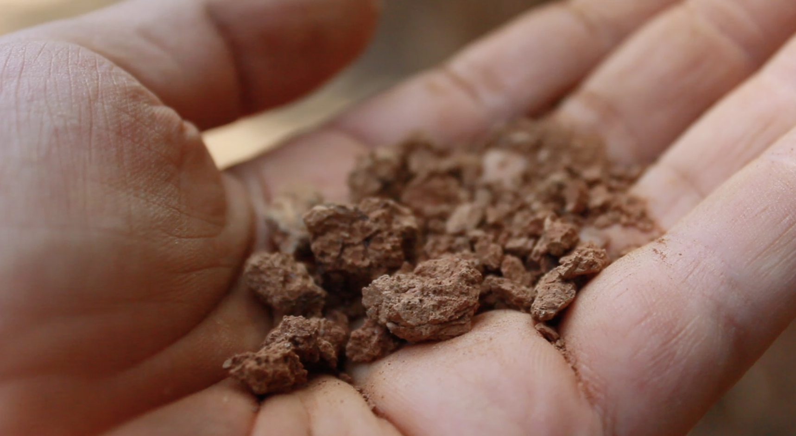
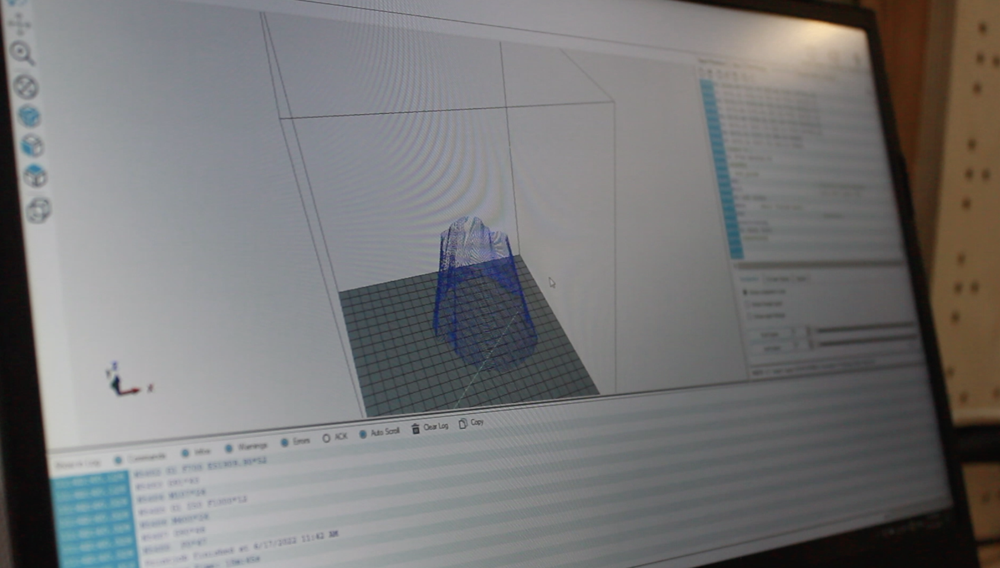
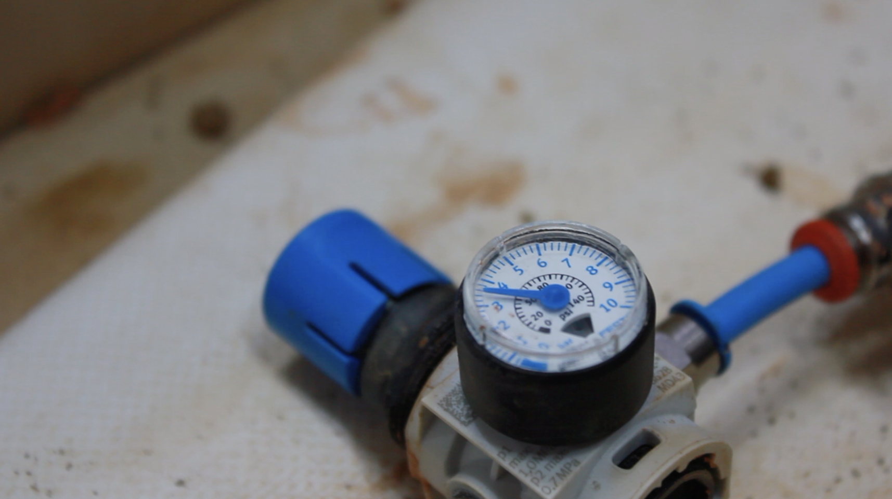
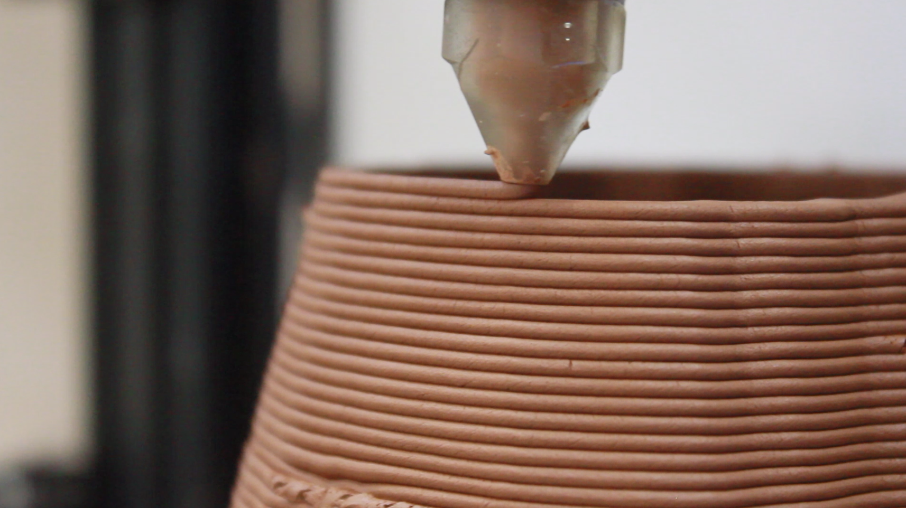
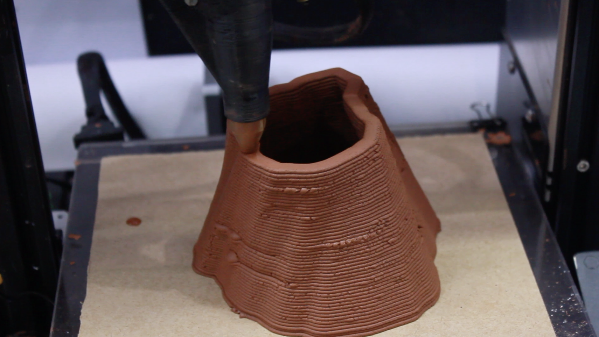

Week 16 - Wildcard Week
Wild Card Week was an opportunity for us to explore several different techniques in one day, based on whatever we preferred. This week’s session was fun, entertaining and very open ended to what we wanted to do. We got the chance to explore alternative fabrication techniques.
The first part of the class was based on the Robotic Arm. We learnt about its 6-axis manipulator which Edu compared to our own arms. It has a wide range of motion, much more than a CNC, laser of even 3D printer. We also learned about the notions of replicability, and the tiniest margins of eror which could cause the product to not be of desired result, after thousands of times.
There were some differences to what we were used to: modeling for the robotic arm is different than modeling for any other fabrication method because it works with planes instead of points. The robot works in the most efficient way to get to from point A to B.
In the second part of the class, we worked with composites. We got a demonstration on how to use burlap with epoxy resin to make a skateboard deck. In order to create a mould, the vacuum press was used to compress each layer of the burlap which was carefully placed on top of the other and then brushed with resin. We also learned about all the different kinds of resins we could use: from bio-resins, to petroleum based resins. Although bio-resins are bio based and do not require fossil fuels, they have a similar impact as non-bio because they are so hard to degrade, recycle or dispose of.
My project: Clay 3D printing
I really wanted to go to the robotic arm session, but unfortunately it was organised the day that Chris and I had an important meeting with Akasha hub, where we ended up discussing our final project and confirming that it could be displayed there. Although we were sad to miss the session, it was an opportunity we simply could not refuse.
Instead, I teamed up with Juaco to work on one of the installations for the Hybrid Ecosystems event at MDEFest.
As a part of my final MDEF project, Hybrid Ecosystems, I am working with Chris and Juaco to make several exhibitions at Akasha Hub. For Juaco's project 'Sonic Ecologies', Chris and I helped with some of the steps necessary to 3D print with clay recollected directly from the Valldaura forest. He collected the clay, as well as environmental audio recordings, and he combined both of them, transforming everything into physical 3D artifacts. We slowed down the recordings by 80% then folded them into a circle and extruded them upwards to make a 3D object which could then be easily printed. By doing this, Juaco achieved a very interesting 3D shape which represented the environment not only through its material but also through its shape.
Printing the object with the original clay was very challenging, because it did not have the same refined texture as the usual clay we work with at the IAAC fablab. It was not as smooth and thin. There were many small particles, such as sand, which persisted in the material even after sieving and filtering it allthrough. This meant that the substance was more brittle and fragile when compared to industrially processed pottery clay. As a result, Juaco chose to print most of the objects with the industrial material to guarantee a sturdy output and a smooth printing process.
Photos + Descriptions

Original clay collected from Valldaura. Notice the high percentage of small particles, such as sand, which made it challenging to find the right water to substance mix ratio.

Lofting two slowed-down sound waves to generate the 3D volume.

Monitoring the pressure provided by a compressor going into the clay cartridge. This is necessary to feed a continuous stream of substance into the modified extruder of the Ender 3, where a spindle controls the final outflow of material.

Here, the quality of the print can be seen close-up. This object was not printed with the Valldaura clay but with the standard industrial red clay typically used in pottery.

An object close to completion, while printing. Notice the increased print line width to achieve a more stable result.
Conclusions and takeaways:
These are the important parts to consider when 3D clay printing:
1) consistency and texture of the powder.
The initial material needs to be thin and homogenous in order to assure a stable texture when printing, so that the material does not crumble or topple down on itself
2) proper thickness.
The material cannot be too thick, if not it will clog the machine, but if it is too thin then the object will topple down on itself.
3) pressure of the machine.
Ensuring the right amount to pressure is coming out so that the mixture is being extruded at the right speed.
Although this is not a skill I ever thought I would develop, it was super interesting and satisfying to see the clay come out of the modified 3D Ender printers. It's great to know that the tools we use so commonly can be modified and customised to our individual desires and needs.